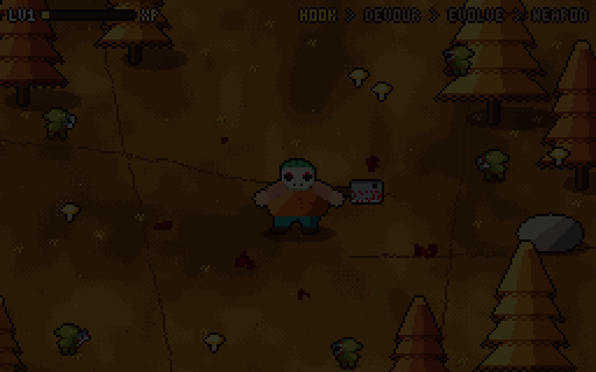
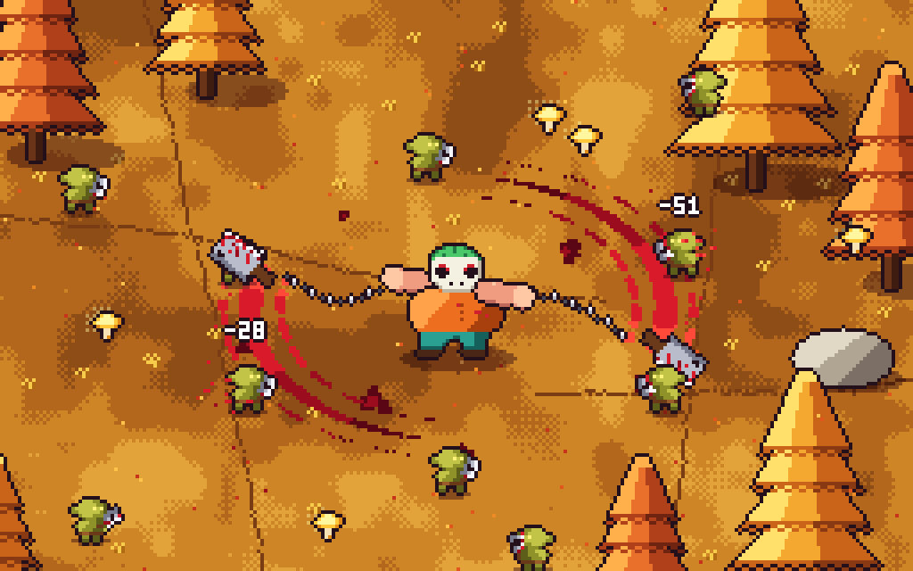
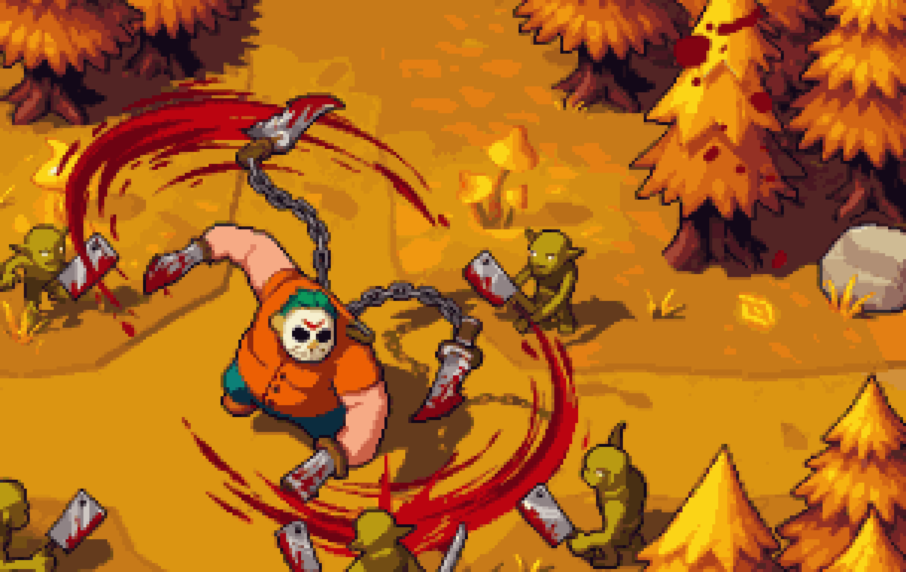

Butcher Hero — пиксельарт
HOOK → DEVOUR → EVOLVE
Мясник закидывает тесак на цепи, подтаскивает гоблина, съедает его в три укуса и растёт до LV2. Нарисовано кодом пиксель за пикселем: 256×160, 160 кадров, 10 секунд.

MP4 1280×800 · все 160 кадров одним листом

Мясорубка
Мясник раскручивает цепи с тесаками в осеннем лесу, гоблины получают урон. Анимация нарисована кодом пиксель за пикселем: 256×160, 64 кадра, 16 fps, бесшовный цикл.

MP4 1280×800 · все 64 кадра одним листом

Скриншот игры в пиксельарте
